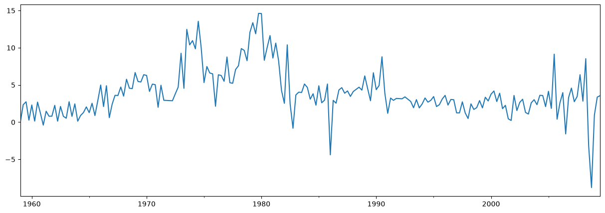
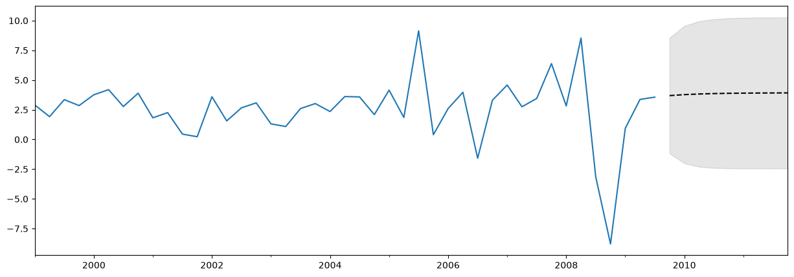

Forecasting in statsmodels#
This notebook describes forecasting using time series models in statsmodels.
Note: this notebook applies only to the state space model classes, which are:
sm.tsa.SARIMAXsm.tsa.UnobservedComponentssm.tsa.VARMAXsm.tsa.DynamicFactor
[1]:
%matplotlib inline
import matplotlib.pyplot as plt
import numpy as np
import pandas as pd
import statsmodels.api as sm
macrodata = sm.datasets.macrodata.load_pandas().data
macrodata.index = pd.period_range("1959Q1", "2009Q3", freq="Q")
Basic example#
A simple example is to use an AR(1) model to forecast inflation. Before forecasting, let’s take a look at the series:
[2]:
endog = macrodata["infl"]
endog.plot(figsize=(15, 5))
[2]:
<Axes: >

Constructing and estimating the model#
The next step is to formulate the econometric model that we want to use for forecasting. In this case, we will use an AR(1) model via the SARIMAX class in statsmodels.
After constructing the model, we need to estimate its parameters. This is done using the fit method. The summary method produces several convenient tables showing the results.
[3]:
# Construct the model
mod = sm.tsa.SARIMAX(endog, order=(1, 0, 0), trend="c")
# Estimate the parameters
res = mod.fit()
print(res.summary())
SARIMAX Results
==============================================================================
Dep. Variable: infl No. Observations: 203
Model: SARIMAX(1, 0, 0) Log Likelihood -472.714
Date: Wed, 24 Jun 2026 AIC 951.427
Time: 09:43:27 BIC 961.367
Sample: 03-31-1959 HQIC 955.449
- 09-30-2009
Covariance Type: opg
==============================================================================
coef std err z P>|z| [0.025 0.975]
------------------------------------------------------------------------------
intercept 1.3962 0.254 5.488 0.000 0.898 1.895
ar.L1 0.6441 0.039 16.482 0.000 0.568 0.721
sigma2 6.1519 0.397 15.487 0.000 5.373 6.930
===================================================================================
Ljung-Box (L1) (Q): 8.43 Jarque-Bera (JB): 68.45
Prob(Q): 0.00 Prob(JB): 0.00
Heteroskedasticity (H): 1.47 Skew: -0.22
Prob(H) (two-sided): 0.12 Kurtosis: 5.81
===================================================================================
Warnings:
[1] Covariance matrix calculated using the outer product of gradients (complex-step).
Forecasting#
Out-of-sample forecasts are produced using the forecast or get_forecast methods from the results object.
The forecast method gives only point forecasts.
[4]:
# The default is to get a one-step-ahead forecast:
print(res.forecast())
2009Q4 3.68921
Freq: Q-DEC, dtype: float64
The get_forecast method is more general, and also allows constructing confidence intervals.
[5]:
# Here we construct a more complete results object.
fcast_res1 = res.get_forecast()
# Most results are collected in the `summary_frame` attribute.
# Here we specify that we want a confidence level of 90%
print(fcast_res1.summary_frame(alpha=0.10))
infl mean mean_se mean_ci_lower mean_ci_upper
2009Q4 3.68921 2.480302 -0.390523 7.768943
The default confidence level is 95%, but this can be controlled by setting the alpha parameter, where the confidence level is defined as \((1 - \alpha) \times 100\%\). In the example above, we specified a confidence level of 90%, using alpha=0.10.
Specifying the number of forecasts#
Both of the functions forecast and get_forecast accept a single argument indicating how many forecasting steps are desired. One option for this argument is always to provide an integer describing the number of steps ahead you want.
[6]:
print(res.forecast(steps=2))
2009Q4 3.689210
2010Q1 3.772434
Freq: Q-DEC, Name: predicted_mean, dtype: float64
[7]:
fcast_res2 = res.get_forecast(steps=2)
# Note: since we did not specify the alpha parameter, the
# confidence level is at the default, 95%
print(fcast_res2.summary_frame())
infl mean mean_se mean_ci_lower mean_ci_upper
2009Q4 3.689210 2.480302 -1.172092 8.550512
2010Q1 3.772434 2.950274 -2.009996 9.554865
However, if your data included a Pandas index with a defined frequency (see the section at the end on Indexes for more information), then you can alternatively specify the date through which you want forecasts to be produced:
[8]:
print(res.forecast("2010Q2"))
2009Q4 3.689210
2010Q1 3.772434
2010Q2 3.826039
Freq: Q-DEC, Name: predicted_mean, dtype: float64
[9]:
fcast_res3 = res.get_forecast("2010Q2")
print(fcast_res3.summary_frame())
infl mean mean_se mean_ci_lower mean_ci_upper
2009Q4 3.689210 2.480302 -1.172092 8.550512
2010Q1 3.772434 2.950274 -2.009996 9.554865
2010Q2 3.826039 3.124571 -2.298008 9.950087
Plotting the data, forecasts, and confidence intervals#
Often it is useful to plot the data, the forecasts, and the confidence intervals. There are many ways to do this, but here’s one example
[10]:
fig, ax = plt.subplots(figsize=(15, 5))
# Plot the data (here we are subsetting it to get a better look at the forecasts)
endog.loc["1999":].plot(ax=ax)
# Construct the forecasts
fcast = res.get_forecast("2011Q4").summary_frame()
fcast["mean"].plot(ax=ax, style="k--")
ax.fill_between(
fcast.index, fcast["mean_ci_lower"], fcast["mean_ci_upper"], color="k", alpha=0.1
);

Note on what to expect from forecasts#
The forecast above may not look very impressive, as it is almost a straight line. This is because this is a very simple, univariate forecasting model. Nonetheless, keep in mind that these simple forecasting models can be extremely competitive.
Prediction vs Forecasting#
The results objects also contain two methods that all for both in-sample fitted values and out-of-sample forecasting. They are predict and get_prediction. The predict method only returns point predictions (similar to forecast), while the get_prediction method also returns additional results (similar to get_forecast).
In general, if your interest is out-of-sample forecasting, it is easier to stick to the forecast and get_forecast methods.
Cross validation#
Note: some of the functions used in this section were first introduced in statsmodels v0.11.0.
A common use case is to cross-validate forecasting methods by performing h-step-ahead forecasts recursively using the following process:
Fit model parameters on a training sample
Produce h-step-ahead forecasts from the end of that sample
Compare forecasts against test dataset to compute error rate
Expand the sample to include the next observation, and repeat
Economists sometimes call this a pseudo-out-of-sample forecast evaluation exercise, or time-series cross-validation.
Example#
We will conduct a very simple exercise of this sort using the inflation dataset above. The full dataset contains 203 observations, and for expositional purposes we’ll use the first 80% as our training sample and only consider one-step-ahead forecasts.
A single iteration of the above procedure looks like the following:
[11]:
# Step 1: fit model parameters w/ training sample
training_obs = int(len(endog) * 0.8)
training_endog = endog[:training_obs]
training_mod = sm.tsa.SARIMAX(training_endog, order=(1, 0, 0), trend="c")
training_res = training_mod.fit()
# Print the estimated parameters
print(training_res.params)
intercept 1.162076
ar.L1 0.724242
sigma2 5.051600
dtype: float64
[12]:
# Step 2: produce one-step-ahead forecasts
fcast = training_res.forecast()
# Step 3: compute root mean square forecasting error
true = endog.reindex(fcast.index)
error = true - fcast
# Print out the results
print(
pd.concat(
[true.rename("true"), fcast.rename("forecast"), error.rename("error")], axis=1
)
)
true forecast error
1999Q3 3.35 2.55262 0.79738
To add on another observation, we can use the append or extend results methods. Either method can produce the same forecasts, but they differ in the other results that are available:
appendis the more complete method. It always stores results for all training observations, and it optionally allows refitting the model parameters given the new observations (note that the default is not to refit the parameters).extendis a faster method that may be useful if the training sample is very large. It only stores results for the new observations, and it does not allow refitting the model parameters (i.e. you have to use the parameters estimated on the previous sample).
If your training sample is relatively small (less than a few thousand observations, for example) or if you want to compute the best possible forecasts, then you should use the append method. However, if that method is infeasible (for example, because you have a very large training sample) or if you are okay with slightly suboptimal forecasts (because the parameter estimates will be slightly stale), then you can consider the extend method.
A second iteration, using the append method and refitting the parameters, would go as follows (note again that the default for append does not refit the parameters, but we have overridden that with the refit=True argument):
[13]:
# Step 1: append a new observation to the sample and refit the parameters
append_res = training_res.append(endog[training_obs : training_obs + 1], refit=True)
# Print the re-estimated parameters
print(append_res.params)
intercept 1.171544
ar.L1 0.723152
sigma2 5.024580
dtype: float64
Notice that these estimated parameters are slightly different than those we originally estimated. With the new results object, append_res, we can compute forecasts starting from one observation further than the previous call:
[14]:
# Step 2: produce one-step-ahead forecasts
fcast = append_res.forecast()
# Step 3: compute root mean square forecasting error
true = endog.reindex(fcast.index)
error = true - fcast
# Print out the results
print(
pd.concat(
[true.rename("true"), fcast.rename("forecast"), error.rename("error")], axis=1
)
)
true forecast error
1999Q4 2.85 3.594102 -0.744102
Putting it altogether, we can perform the recursive forecast evaluation exercise as follows:
[15]:
# Setup forecasts
nforecasts = 3
forecasts = {}
# Get the number of initial training observations
nobs = len(endog)
n_init_training = int(nobs * 0.8)
# Create model for initial training sample, fit parameters
training_endog = endog.iloc[:n_init_training]
mod = sm.tsa.SARIMAX(training_endog, order=(1, 0, 0), trend="c")
res = mod.fit()
# Save initial forecast
forecasts[training_endog.index[-1]] = res.forecast(steps=nforecasts)
# Step through the rest of the sample
for t in range(n_init_training, nobs):
# Update the results by appending the next observation
updated_endog = endog.iloc[t : t + 1]
res = res.append(updated_endog, refit=False)
# Save the new set of forecasts
forecasts[updated_endog.index[0]] = res.forecast(steps=nforecasts)
# Combine all forecasts into a dataframe
forecasts = pd.concat(forecasts, axis=1)
print(forecasts.iloc[:5, :5])
1999Q2 1999Q3 1999Q4 2000Q1 2000Q2
1999Q3 2.552620 NaN NaN NaN NaN
1999Q4 3.010790 3.588286 NaN NaN NaN
2000Q1 3.342616 3.760863 3.226165 NaN NaN
2000Q2 NaN 3.885850 3.498599 3.885225 NaN
2000Q3 NaN NaN 3.695908 3.975918 4.196649
We now have a set of three forecasts made at each point in time from 1999Q2 through 2009Q3. We can construct the forecast errors by subtracting each forecast from the actual value of endog at that point.
[16]:
# Construct the forecast errors
forecast_errors = forecasts.apply(lambda column: endog - column).reindex(
forecasts.index
)
print(forecast_errors.iloc[:5, :5])
1999Q2 1999Q3 1999Q4 2000Q1 2000Q2
1999Q3 0.797380 NaN NaN NaN NaN
1999Q4 -0.160790 -0.738286 NaN NaN NaN
2000Q1 0.417384 -0.000863 0.533835 NaN NaN
2000Q2 NaN 0.304150 0.691401 0.304775 NaN
2000Q3 NaN NaN -0.925908 -1.205918 -1.426649
To evaluate our forecasts, we often want to look at a summary value like the root mean square error. Here we can compute that for each horizon by first flattening the forecast errors so that they are indexed by horizon and then computing the root mean square error fore each horizon.
[17]:
# Reindex the forecasts by horizon rather than by date
def flatten(column):
return column.dropna().reset_index(drop=True)
flattened = forecast_errors.apply(flatten)
flattened.index = (flattened.index + 1).rename("horizon")
print(flattened.iloc[:3, :5])
1999Q2 1999Q3 1999Q4 2000Q1 2000Q2
horizon
1 0.797380 -0.738286 0.533835 0.304775 -1.426649
2 -0.160790 -0.000863 0.691401 -1.205918 -0.311464
3 0.417384 0.304150 -0.925908 -0.151602 -2.384952
[18]:
# Compute the root mean square error
rmse = (flattened**2).mean(axis=1) ** 0.5
print(rmse)
horizon
1 3.292700
2 3.421808
3 3.280012
dtype: float64
Using extend#
We can check that we get similar forecasts if we instead use the extend method, but that they are not exactly the same as when we use append with the refit=True argument. This is because extend does not re-estimate the parameters given the new observation.
[19]:
# Setup forecasts
nforecasts = 3
forecasts = {}
# Get the number of initial training observations
nobs = len(endog)
n_init_training = int(nobs * 0.8)
# Create model for initial training sample, fit parameters
training_endog = endog.iloc[:n_init_training]
mod = sm.tsa.SARIMAX(training_endog, order=(1, 0, 0), trend="c")
res = mod.fit()
# Save initial forecast
forecasts[training_endog.index[-1]] = res.forecast(steps=nforecasts)
# Step through the rest of the sample
for t in range(n_init_training, nobs):
# Update the results by appending the next observation
updated_endog = endog.iloc[t : t + 1]
res = res.extend(updated_endog)
# Save the new set of forecasts
forecasts[updated_endog.index[0]] = res.forecast(steps=nforecasts)
# Combine all forecasts into a dataframe
forecasts = pd.concat(forecasts, axis=1)
print(forecasts.iloc[:5, :5])
1999Q2 1999Q3 1999Q4 2000Q1 2000Q2
1999Q3 2.552620 NaN NaN NaN NaN
1999Q4 3.010790 3.588286 NaN NaN NaN
2000Q1 3.342616 3.760863 3.226165 NaN NaN
2000Q2 NaN 3.885850 3.498599 3.885225 NaN
2000Q3 NaN NaN 3.695908 3.975918 4.196649
[20]:
# Construct the forecast errors
forecast_errors = forecasts.apply(lambda column: endog - column).reindex(
forecasts.index
)
print(forecast_errors.iloc[:5, :5])
1999Q2 1999Q3 1999Q4 2000Q1 2000Q2
1999Q3 0.797380 NaN NaN NaN NaN
1999Q4 -0.160790 -0.738286 NaN NaN NaN
2000Q1 0.417384 -0.000863 0.533835 NaN NaN
2000Q2 NaN 0.304150 0.691401 0.304775 NaN
2000Q3 NaN NaN -0.925908 -1.205918 -1.426649
[21]:
# Reindex the forecasts by horizon rather than by date
def flatten(column):
return column.dropna().reset_index(drop=True)
flattened = forecast_errors.apply(flatten)
flattened.index = (flattened.index + 1).rename("horizon")
print(flattened.iloc[:3, :5])
1999Q2 1999Q3 1999Q4 2000Q1 2000Q2
horizon
1 0.797380 -0.738286 0.533835 0.304775 -1.426649
2 -0.160790 -0.000863 0.691401 -1.205918 -0.311464
3 0.417384 0.304150 -0.925908 -0.151602 -2.384952
[22]:
# Compute the root mean square error
rmse = (flattened**2).mean(axis=1) ** 0.5
print(rmse)
horizon
1 3.292700
2 3.421808
3 3.280012
dtype: float64
By not re-estimating the parameters, our forecasts are slightly worse (the root mean square error is higher at each horizon). However, the process is faster, even with only 200 datapoints. Using the %%timeit cell magic on the cells above, we found a runtime of 570ms using extend versus 1.7s using append with refit=True. (Note that using extend is also faster than using append with refit=False).
Indexes#
Throughout this notebook, we have been making use of Pandas date indexes with an associated frequency. As you can see, this index marks our data as at a quarterly frequency, between 1959Q1 and 2009Q3.
[23]:
print(endog.index)
PeriodIndex(['1959Q1', '1959Q2', '1959Q3', '1959Q4', '1960Q1', '1960Q2',
'1960Q3', '1960Q4', '1961Q1', '1961Q2',
...
'2007Q2', '2007Q3', '2007Q4', '2008Q1', '2008Q2', '2008Q3',
'2008Q4', '2009Q1', '2009Q2', '2009Q3'],
dtype='period[Q-DEC]', length=203)
In most cases, if your data has an associated data/time index with a defined frequency (like quarterly, monthly, etc.), then it is best to make sure your data is a Pandas series with the appropriate index. Here are three examples of this:
[24]:
# Annual frequency, using a PeriodIndex
index = pd.period_range(start="2000", periods=4, freq="Y")
endog1 = pd.Series([1, 2, 3, 4], index=index)
print(endog1.index)
PeriodIndex(['2000', '2001', '2002', '2003'], dtype='period[Y-DEC]')
[25]:
# Quarterly frequency, using a DatetimeIndex
index = pd.date_range(start="2000", periods=4, freq="QS")
endog2 = pd.Series([1, 2, 3, 4], index=index)
print(endog2.index)
DatetimeIndex(['2000-01-01', '2000-04-01', '2000-07-01', '2000-10-01'], dtype='datetime64[us]', freq='QS-JAN')
[26]:
# Monthly frequency, using a DatetimeIndex
index = pd.date_range(start="2000", periods=4, freq="ME")
endog3 = pd.Series([1, 2, 3, 4], index=index)
print(endog3.index)
DatetimeIndex(['2000-01-31', '2000-02-29', '2000-03-31', '2000-04-30'], dtype='datetime64[us]', freq='ME')
In fact, if your data has an associated date/time index, it is best to use that even if does not have a defined frequency. An example of that kind of index is as follows - notice that it has freq=None:
[27]:
index = pd.DatetimeIndex(
[
"2000-01-01 10:08am",
"2000-01-01 11:32am",
"2000-01-01 5:32pm",
"2000-01-02 6:15am",
]
)
endog4 = pd.Series([0.2, 0.5, -0.1, 0.1], index=index)
print(endog4.index)
DatetimeIndex(['2000-01-01 10:08:00', '2000-01-01 11:32:00',
'2000-01-01 17:32:00', '2000-01-02 06:15:00'],
dtype='datetime64[us]', freq=None)
You can still pass this data to statsmodels’ model classes, but you will get the following warning, that no frequency data was found:
[28]:
mod = sm.tsa.SARIMAX(endog4)
res = mod.fit()
/opt/hostedtoolcache/Python/3.14.6/x64/lib/python3.14/site-packages/statsmodels/tsa/base/tsa_model.py:464: ValueWarning: A date index has been provided, but it has no associated frequency information and so will be ignored when e.g. forecasting.
self._init_dates(dates, freq)
/opt/hostedtoolcache/Python/3.14.6/x64/lib/python3.14/site-packages/statsmodels/tsa/base/tsa_model.py:464: ValueWarning: A date index has been provided, but it has no associated frequency information and so will be ignored when e.g. forecasting.
self._init_dates(dates, freq)
What this means is that you cannot specify forecasting steps by dates, and the output of the forecast and get_forecast methods will not have associated dates. The reason is that without a given frequency, there is no way to determine what date each forecast should be assigned to. In the example above, there is no pattern to the date/time stamps of the index, so there is no way to determine what the next date/time should be (should it be in the morning of 2000-01-02? the afternoon? or
maybe not until 2000-01-03?).
For example, if we forecast one-step-ahead:
[29]:
res.forecast(1)
/opt/hostedtoolcache/Python/3.14.6/x64/lib/python3.14/site-packages/statsmodels/tsa/base/tsa_model.py:832: FutureWarning: No supported index is available. In the next version, calling this method in a model without a supported index will result in an exception.
return get_prediction_index(
[29]:
4 0.011866
dtype: float64
The index associated with the new forecast is 4, because if the given data had an integer index, that would be the next value. A warning is given letting the user know that the index is not a date/time index.
If we try to specify the steps of the forecast using a date, we will get the following exception:
KeyError: 'The `end` argument could not be matched to a location related to the index of the data.'
[30]:
# Here we'll catch the exception to prevent printing too much of
# the exception trace output in this notebook
try:
res.forecast("2000-01-03")
except KeyError as e:
print(e)
'The `end` argument could not be matched to a location related to the index of the data.'
Ultimately there is nothing wrong with using data that does not have an associated date/time frequency, or even using data that has no index at all, like a Numpy array. However, if you can use a Pandas series with an associated frequency, you’ll have more options for specifying your forecasts and get back results with a more useful index.